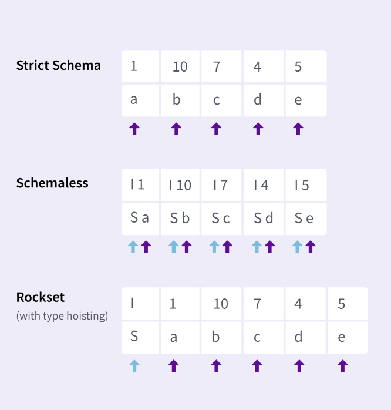

Dhruba is the co-founder and CTO at Rockset. Founding engineer of RocksDB and HDFS. Also worked on HBase, Hive, Andrew File System (AFS).
Where has data processing been?
- 2006-12: Hadoop
- Batch processing optimized for efficiency.
- Hadoop mainly got popular because it was able to handle a large amount of data.
- 2012-18: Apache Spark, Kafka
- Stream processing optimized for throughput.
- 2018-now: Rockset
- Analytical applications optimized for: data latency, query latency, QPS
- data latency: how much duration after the data is produced can you query it
- eg of analytical apps: realtime fleet management, game leaderboards
- Analytical applications optimized for: data latency, query latency, QPS
What is Rockset?
Realtime indexing on massive datasets for building realtime apps on live data without ETL or pipelines.
The Aggregator Leaf Tailer (ALT) Architecture
- Tailers “tail” data from each data stream and translate it into internal format.
- Data is sent to leaf nodes where its processed and kept ready for queries.
- The 2-level aggregator serves SQL queries coming from applications or the dashboard.
- Different from a traditional Lambda Architecture & Kappa Architecture. Follows CQRS pattern (writes are separated from reads). Separating the writes allows them to handle high write throughput without impacting read query latency.
- Got inspired while building the FB Newsfeed app which needs to look at a lot of data, rank it by relevance and show it.
- Architecture is completely disaggregated so each component can be scaled independently.
- High write volume: increase tailers
- Amount of data storage increases: more leaf nodes
- More queries: more aggregators
- Sidenote
- Scuba, Nemo at FB also do this. LinkedIn also uses the same architecture.
- Ref: Aggregator Leaf Tailer: An Alternative to Lambda Architecture for Real-Time Analytics
Key Benefits of ALT
- Makes queries fast: indexing all data at time of ingest
- Runs complex queries on the fly: Distributed aggregator tier that scales compute and memory resources independently
- Cost-effective: All components can be independently scaled up or down.
- Optimizes read & writes in isolation w/ CQRS (write compute vs. read compute separation, not storage separation)
Converged Indexing
- Ref: Converged Index™: The Secret Sauce Behind Rockset’s Fast Queries
- Rockset is a NoSQL database that accepts JSON, CSV, XML or any other semi-structured data.
- Rockset stores every column of every document in a row-based index, column-store index and an inverted index by default.
- Q/A: Are the indexes updated one at a time? Could I observe the row-based index being updated before the inverted index and so on?
- Rockset doesn’t support ACID transactions but updates are atomic i.e. changes to all indexes will be observed at once and not separately.
- How does converged indexing fit into ALT?
- The tailers extract all the fields inside the provided semi-structured data.
- The leaf houses Rockset’s converged indexes.
- The optimizer can pick the index for the fastest query enhancing the performance of aggregators.
Internals
- Built on top of key-value store RocksDB
- Shreds document into many key-value pairs
- Types of keys
- R (Row) Keys
- Given the id and field, you can find its values & scan through them quickly and recreate the document you stored.
- C (Column Store) Keys
- Data for a particular column is stored together so you can do vectorization, scanning through all value etc.
- The columnar store is also built on top of the key-value store.
- S (Inverted Index) Keys
- R (Row) Keys
Inverted Indexing for Point Lookups
- For each value, store documents containing that value.
- Quickly retrieve a list of document IDs that match a predicate.
- Note: Rockset supports nested fields like JSON, Arrays.
Columnar Store for Aggregations
- Store each column separately.
- Great compression.
- Only fetch columns the query needs.
Query Optimization Examples
Highly Selective Query (will use the inverted index)
SELECT *
FROM search_logs
WHERE keyword = 'hpts'
AND locale = 'en'
Assumption: As per statistics, this query will have very few results
—
Large Scan (will use Columnar Store)
SELECT keyword, count(*)
FROM search_logs
GROUP BY keyword
ORDER BY count(*) DESC
Q/A
- Are you storing all the indexes in the same table-space of RocksDB?
- RocksDB has column families but we get better performance if we keep data in the same table-space (called column family in RocksDB)
- Is RocksDB the right tool for this? It seems like you’re sacrificing a lot of efficiency? RocksDB supports page-level compression but nothing else.
- RocksDB has delta encoding. Overhead for real-life datasets is very less.
Challenges with Converged Indexing
- One new record = multiple servers update
- In a traditional database w/ term sharding & n indexes, 1 write incurs updates to n different indexes on n servers.
- Requires a distributed txn. (paxos, raft) b/w n servers.
- Addressing the Challenge : Doc Sharding
- Rockset doesn’t use term sharding but doc sharding
- Term sharding: splitting the terms (keywords) in the inverted index across multiple shards, each shard handles a subset of terms
- Most traditional DBs do term sharding. They’re optimized for throughput and efficiency but not latency.
- Doc sharding: all indices for a doc stored on 1 machine
- Elasticsearch, Google Search, FB Search use this
- Only paper I could find that mentions both the terms: https://www.vldb.org/pvldb/vol12/p709-archer.pdf
- Term sharding: splitting the terms (keywords) in the inverted index across multiple shards, each shard handles a subset of terms
- Doc sharding means all new keys will only affect a single shard/lead
- Updates are durably buffered to a distributed log
- Writes are piped through the distributed log and then split basis keys (eg. doc-id)
- Leafs only tail the documents in the shards they’re responsible for
- Disadvantage: Query needs to fan out to all machines and get results even though only 1 of the machines has the data
- What prevents them from keeping a metadata store to point to shards?
- Rockset doesn’t use term sharding but doc sharding
- One new doc = multiple random writes
- Traditional systems use BTree storage structure
- Keys are sorted across tables
- A single record update with multiple secondary index would incur writes to multiple different locations
- Addressing the Challenge : RocksDB LSM
- Multiple records updates accumulate in memory and are written into a single SST file.
- Keys are sorted b/w SST files via compaction in a background process.
- Multiple index updates from multiple docs result in one write to storage.
Smart Schema SQL
- What?
- Automatic generation of a schema based on the exact fields and types present at the time of ingest. Ingestion is schema-less.
- Why?
- Avoid data pipelines that can cause data latency.
- Semi-structured data is complex and messy.
- Ingest any semi-structured data (similar to NoSQL)
- Under the Hood
- Type information stored with values, not “columns”.
- Strongly types queries on dynamically types fields.
- Designed for nested semi-structured data.
Eg:
// Documents
{
"name": "John",
"age": 31,
"city": "New York"
}
{
"name": "Michael",
"age": "notfound",
"experiences": [
{
"title": "XYZ",
"years": 4
}
]
}
// collection schema
| field | occurrences | total | type |
| ----------------------------- | ----------- | ----- | ------ |
| ["name"] | 2 | 2 | string |
| ["age"] | 2 | 2 | string |
| ["age"] | 1 | 2 | int |
| ["experiences"] | 1 | 1 | array |
| ["experiences", "*"] | 1 | 1 | object |
| ["experiences", "*", "title"] | 1 | 1 | string |
| ["experiences", "*", "years"] | 1 | 1 | int |
| ["city"] | 1 | 2 | string |Q/A: Is this an actual table that’s stored? No. This is materialized on query. There are type counters maintained on every leaf node. When we need to describe table, it queries all leaf nodes and produces the table using the stored counters.
Schema Binding at Query Time
- Tailers ingest data without pre-defined schemas.
- Aggregator use the schema to make queries faster.
Challenges with Smart Schemas
Ref: https://rockset.com/blog/why-real-time-analytics-requires-both-the-flexibility-of-nosql-and-strict/
- Additional CPU usage for processing queries
- Use type hoisting to reduce CPU required to run queries.
- 
- The
Stype is hoisted at beginning since the values have the same type. If a lot of values have the same type, then Rockset won’t have much overhead. - Schemaless is storing the type with every value.
- The
- Rockset’s query price / performance is on par with strict schema systems.
- Requires increased disk space to store types
- Use field interning to reduce the space required to store schema.
- Instead of storing duplicate strings multiple times, the database stores a single copy of each unique string and uses references (or pointers) to that single instance wherever the string appears.
-
- Instead of
0: S "City", it should’ve been0 : S"Rancho Santa Margarita
- Instead of
- Use field interning to reduce the space required to store schema.
Cloud Scaling Architecture
Key insight into economics of cloud
- Cost of 1 CPU for 100 mins = Cost of 100 CPU for 1 min
- Without cloud : statically provision for peak demand
- With cloud: dynamically provision for current demand
- Goal : resources scale up and down as needed to achieve desired performance
Cloud Autoscaling
- What?
- Each tailer, leaf or aggregator can be independently scaled up and down as needed.
- Why?
- No provisioning
- Pay for usage
- No need to provision for peak capacity
Tailers are easy to scale up since they’re stateless. They’re scaled up using K8s and AWS autoscaling.
Scaling Leaf Nodes
- Scale down : Use durability of cloud storage.
- RocksDB Cloud is a layer on top of RocksDB. Every time new SST files get produced, they’re pushed to cloud storage (like AWS S3, GCS) by RocksDB Cloud.
- No data loss even if all leaf servers crash.
- Scale up : Use zero-copy clones of rocksdb-cloud
- Takes SST files from an existing leaf shard and starts filling it in. It also starts tailing new data that tailers are generating.
- It then becomes a part of the query process and queries through the aggregators start coming to the new leaf process.
- No peer-to-peer replication needed so this has no performance impact on existing leaf servers.
- Q/A : Since S3 is eventually consistent, where are you storing S3 keys in your system to do strong consistent reads?
- RocksDB has something called a “manifest” inside the DB. The replica reads the manifest and finds what S3 files is part of the database. If the replica doesn’t find an S3 file yet, it retries and obtains it.
Separate write compute from query compute
Ref: https://rockset.com/blog/remote-compactions-in-rocksdb-cloud/
Summary : Analytics Application on Massive Datasets
- Index rather than partition-and-scan
- Separate write compute from query compute
- Optimized for low data latency, low query latency and high QPS
Q/A:
- The SST files are written to Cloud but not the WAL. Does that mean that the tailers are stateful or do they rely on upstream durability for log replay?
- Other than tailers that tail a data source, Rockset also has a write API which writes directly.
- Rockset uses a distributed log to make things durable before it hits S3. If you already have data in sources like data-streams (Kafka) or data-lakes then you don’t need this durability.
- If using the write API to Rockset, it uses a distributed log and does three-way replication for the last 1 or 5mins of logs before it actually hits the S3 storage system.
Appendix
- https://github.com/rockset/rocksdb-cloud
- Scuba: Diving into Data at Facebook
- Nemo: Data discovery at Facebook
- Slides from a similar presentation: https://files.devnetwork.cloud/DeveloperWeek/presentations/2020/Dhruba-Borthakur.pdf
- Rockset was acquired by OpenAI.